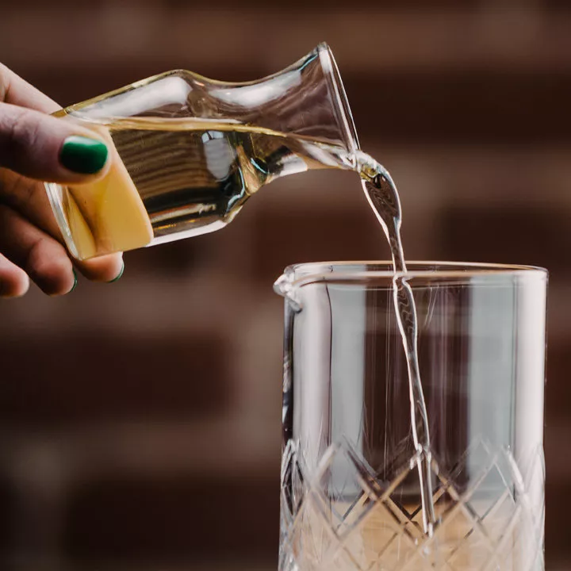

Simple Syrup

Description
Simple Syrup is an easy to make common ingredient in many cocktails. In this recipe we will go over how to make a basic simple syrup.
Ingredients
- 1/2 Cup Water
- 1/2 Cup Granulated Sugar
Instructions
- Add the sugar and water to a small saucepan over medium heat.
- Stir until sugar is dissolved.
- Let cool, then pour into a glass jar and seal tightly with a lid.
- Simple syrup will keep, refrigerated, for about one month.